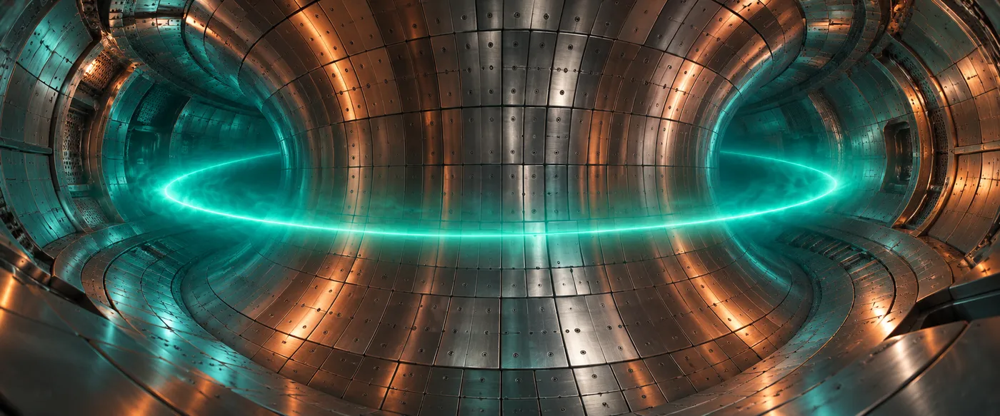

UNMSM / BASE 25
Formación en el Perú y el extranjero para estudiantes de la Escuela Profesional de Ingeniería Nuclear.

Crea tu cuenta gratuita o ingresa para ver los cursos, aplicar filtros y descargar el PDF.
Ingresa con tu cuenta de Aula Nuclear.
La administración registra tu usuario, correo declarado y último ingreso. Guarda tu código de recuperación al crear la cuenta.
Conserva este código en un lugar privado para recuperar tu cuenta.
Ya guardé el código